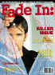
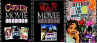

Check back frequently for many announcements of recommended DVDs. Dates in parenthesis are scheduled releases.
June 28, 2000
Take a trip to Chicago and visit that very special used record Championship Vinyl. John Cusack once again delivers the goods in this terrifically original comedy High Fidelity (9/19/00) coming from Buena Vista in an anamorphic 16 x 9 enhanced DVD. Cusack gets some dynamic comic support and Stephen Frears provides zip to the direction.
June 22, 2000
Director Mike Hodges currently has an Indie hit in Croupier showing theatrically. Is it really almost thirty years since Hodges directed Michael Caine in the well received Get Carter (10/3/00). You can find out all about it in this special edition from Warner which includes audio commentary and the 16 x 9 enhanced treatment.
Tony Randall mines the maximum charm out of The Seven Faces of Dr. Lao (10/3/00) directed by legendary effects master George Pal. The 1964 fantasy is set int he Old West. Randall gets a little help from "dreamy" Barbara Eden.
June 21, 2000
How far can you go with black humor before it turns audiences off? American Psycho (9/5/00) stretches the boundaries under the guidance of director Mary Herron. Christian Bale takes on the coveted main role fromt he Brett Easton Ellis novel.
Elizabeth Taylor at her most glorious torturing the effete Montgomery Clift as Katherine Hepburn looks on; it's the oft sordid world of Tennessee Williams in Suddenly Last Summer (8/15/00) making it's DVD bow from Columbia. The 1959 film is being delivered anamorphic and pan/scan. Director Joseph Mankiewicz takes pleasure in directing the action.
June 19, 2000
I can already feel the thunder of the dinosaur steps in the home theater. Universal and Steven Spielberg have finally opened the gates for a Jurassic Park (10/10/00) DVD release. There will be four incarnations of the the theme park movie, two each in Dolby Digital and DTS. It's all packaged in special edition clothing with lots of extras. You buy the movies separately or a collector's limited with both the first movie and it's sequel Jurassic Park:The Lost World (10/10/00) bundled together.
Yahoo Cat Ballou(8/8/00). One of the funniest western spoofs featuring an Oscar winning performance from Lee Marvin arrives on DVD in a special edition from Columbia. The 1965 film has audio commentary and a making of feature included.
June 17, 2000
The original "mocumentary," This is Spinal Tap (9/12/00) is on tap for DVD in a special edition from MGM. Director Rob Reiner's rock group on the road tells all in this candid comic 1984 romp. Featuring audio commentary and a making of documentary, or will it be a mockumentary.
Sometimes those who wait are treated well. Columbia has announced the European edition of Leon: The Professional (8/15/00). The anamorphic widescreen DVD boasts 24 minutes more than the original 1994 U.S. theatrical release. Who knows, maybe it's better.
Keeping the faith with fans of Luc Besson, Columbia is also releasing the director's cut of The Big Blue 98/15/00), which runs 168 minutes, almost an hour more than the original U.S. release. Lots of underwater shots and beautiful mountain backdrops in this 1988 cult favorite.
June 15, 2000
Come back Shane, come back. You won't have to wait very much longer for those words as Paramount is releasing the 1953 classic Western Shane (8/15/00) in a special edition featuring commentary from the director's son, George Stevens, Jr.
The Naked Gun (8/15/00) exposed? Paramount is releasing the rapid fire police comedy in a special edition featuring audio commentary from the principals. The 1.85 anamorphic enhanced DVD is being released at the same time as special editions of the two sequels.
June 11, 2000
Julia Roberts does a convincing job portraying sassy Erin Brockovich (8/15/00) as she discovers a cover-up by a big power company. Universal is packaging the film with a making of documentary and some deleted footage. Anamorphic widescreen 1.85.
June 11, 2000
The hills are alive with the announcement from Fox of The Sound of Music (8/29/00) in a special edition DVD. It appears that Maria and the Von Trapps will not be enhanced for 16 x 9 anamorphically speaking.
This box set from Fox positively sings: The Rogers and Hammerstein Collection (8/29/00) includes Oklahoma, The King and I, Carousel, State Fair, The Sound of Music and South Pacific. Try sitting through this 840 minute set without a break.
June 9, 2000
You can pick up The Omen (9/5/00) or the box set which includes all three titles in the series from Fox in this new anamorphic DVD release. The first, starring Gregory Peck and helmed by Richard Donner is the chilliest.
Fox is putting together one of the monster DVD packages of all time in Planet of the Apes: The Evolution (8/15/00). The six DVD set contains all of the feature films along with a feature length documentary. Unfortunately, the DVDs are not enhanced for 16 x 9 anamorphic.
June 7, 2000
At long last Braveheart (8/29/00) in anamorphic 2.35 to boot. One of DVDs most sought after titles is coming to DVD from Paramount, replete with audio commentary from Mel Gibson and a documentary produced especially for the disc.
June 6, 2000
Warner digs into the MGM vaults for the good-natured Gene Kelly, Frank Sinatra musical, Take Me Out to the Ball Game (9/19/00). Esther Williams switches venues from swimming pool to baseball diamond in this 1949 color film.
Belly up to the bar DVD fans for The Unsinkable Molly Brown (9/19/00). The 1964 film features an Academy Award nominated performance by star Debbie Reynolds, hoofing and singing to the Meredith Wilson score. Warner adds screen tests for Reynolds and co-star Harve Presnell as a bonus.
A "cherce" film for aficionados of Tracy Hepburn, Pat and Mike (9/19/00) comes to DVD from Warner. This is the one in which Kate is a super-athlete and Spence a professional manager. George Cukor once again sits the director's seat.
June 5, 2000
Tracy and Hepburn get ready to spar on DVD in two vintage comedies from MGM/Warner, the 1943 Woman of the Year (9/19/00) and the 1949 Adam's Rib (9/19/00). George Stevens directs the bobs and weaves in Woman of the Year and George Cukor referees Adam's Rib.
June 3, 2000
Bette Davis stars as a Southern belle playing with the hearts of men in the 1938 Jezebel (9/19/00) from Warner. Henry Fonda leads her in the cotillion dance with George Brent cutting in. Directed by stylist William Wyler. You can pull out your handkerchiefs for another Bette vehicle from Warner, the 1939 weeper Dark Victory (9/19/00). Bette cries with the best of them in this flick and Humphrey Bogart is on hand in charge of the stables, no less.
June 2, 2000
Fans of Jim Jarmusch can celebrate Artisan's announcement of a special edition DVD of Ghost Dog: The Way of the Samurai (8/15/00), including audio commentary and deleted scenes. Forest Whitaker stars as a professional killer imbued with sensibilities of Japan.
Selections from the feature archive include articles on Akira Kurosawa, Frank Darabont, Blonde Bimbos, Hollywood Street Gangs, or Vietnam: The Hollywood Pariah, and many more...
A Western is a Western is a Western

Place or time it's still a Western from John Ford's Drums Along the Mohawk to John Sturges' Bad Day at Black Rock.

The Movie Poster Archive include extensive poster images from the films of stars like Susan Hayward, Kirk Douglas, Katharine Hepburn and many more. This month's featured star is Frank Sinatra.

'I stick my neck out for nobody.' :Humphrey Bogart as Rick in Casablanca after ignoring peter Lorre's pleas for help.
Need a daily fix of movie quotes. Reel Quotes Newsletter has the answer. Click on the Reel Quotes symbol symbol for more.


Ask Digital Man
is the web's only 24-hour, totally FREE source for all your home
theater, DVD, Dreamcast, PC, and Networking tech support needs!
They
may be judgmental, but that's the point, isn't it. Lots of DVD
reviews plus news and more.
Click on the link to visit the judge's chambers.
The
DVD Answer Man is a new site devoted to spreading
the DVD gospel. Answers to questions, reviews, links and
more....
 Brad
Lang continues to add more interesting to the extensive
collection at Classic
Movies. Everything from actors and actress to your
favorite directors is linked at the site.
Brad
Lang continues to add more interesting to the extensive
collection at Classic
Movies. Everything from actors and actress to your
favorite directors is linked at the site.
 Direct
from the corridors of the Home Theater Forum, Home Theater Talk
is the newest place on the Net to discuss everything home
theater. Friendly atmosphere and knowledgeable folks are the
secret ingredients.
Direct
from the corridors of the Home Theater Forum, Home Theater Talk
is the newest place on the Net to discuss everything home
theater. Friendly atmosphere and knowledgeable folks are the
secret ingredients.


A great place for movie lovers
and techies to visit for exchange of ideas. New speedy interface
is an inspiration for more dialogue.
Imaging Science Foundation

The Imaging Science Foundation promotes proper standards in home theater viewing. ISF trained technicians offer monitor calibration services to consumers. The difference in a properly calibrated monitor can be astounding. Click on the image to find an ISF member near you.
Elite Entertainment President Vini Bancalari talks about his horror roots with DVD Unleashed. Find out why Vini has started a new DVD enterprise, Focus Film Entertainment. Watch for Sherlock Holmes coming into focus on DVD. Click DVD Unleashed to read all about it.
Bruce
Hershenson Move Posters 
Bruce Hershenson has been running successful movie
poster auctions for a number of years, most notably for
Christies. His site includes many images and a huge variety of
posters for sales from his periodic catalogs.
Home to The
American Society of Cinematographers. Includes
features from American Cinematographer Magazine and more...
Reviews of affordable remote
controls in the market place. Codes and tips as well.

DVD
Demystified makes it all clear.The official
Internet DVD FAQ for the rec.video.dvd Usenet newsgroups.

Odd Man Out/B+,B: This straight-forward IRA tale takes on dream-like qualities under the polished direction of Carol Reed. Stunning images and an amazing James Mason performance.
Check out these selections from our DVD Review Archive. New releases are constantly in our face, but catalog gems should not be forgotten.